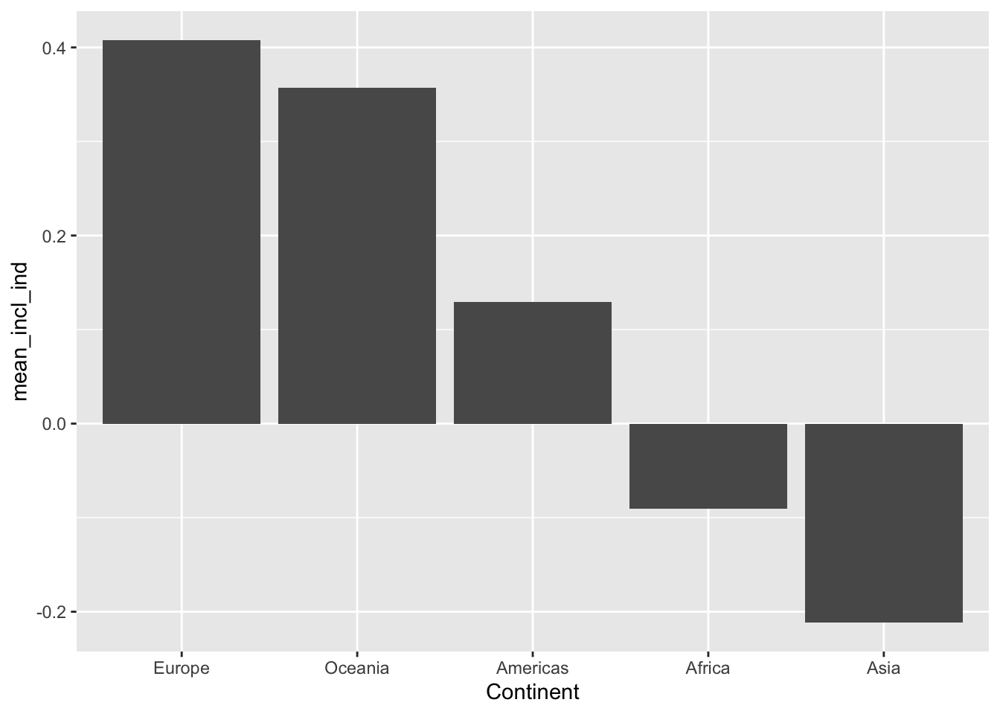
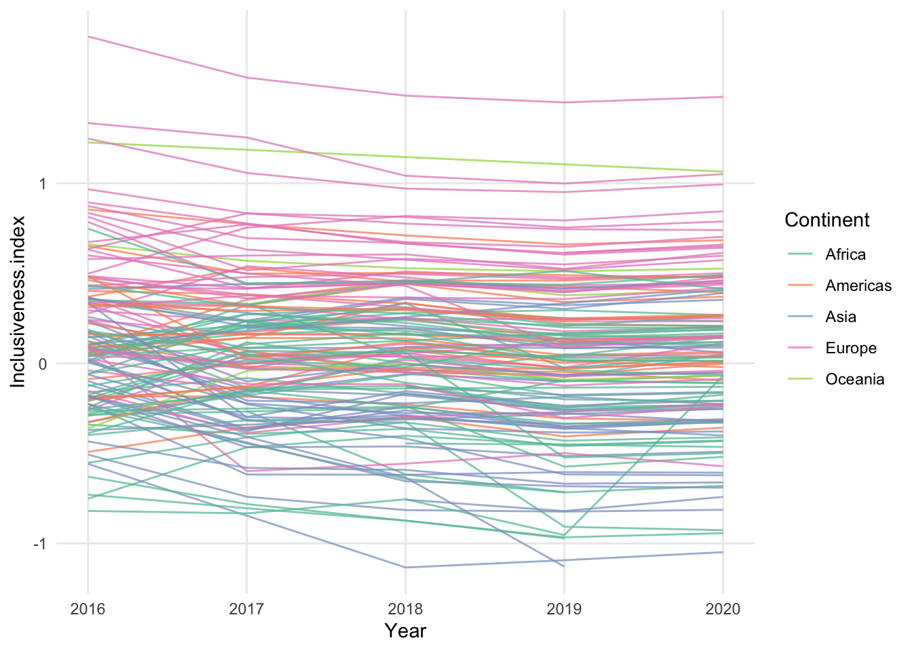

A Datasets
Duke Enrollment
duke_enrollment <- read_csv('data/duke_enrollment/UberMegaMaster_70S-20F-V5.csv') %>%
dplyr::select(-X1, -X.2, -X.1, -X)## Warning: Missing column names filled in: 'X1' [1]##
## ── Column specification ───────────────────────────────
## cols(
## .default = col_double(),
## Semester = col_character(),
## Origin = col_character(),
## Sex = col_character(),
## Region = col_character()
## )
## ℹ Use `spec()` for the full column specifications.duke_enrollment_by_status <- duke_enrollment %>%
dplyr::select(Year, Semester, Origin, Region, Sex, All_UG, All_Grad) %>%
rename("Undergraduate" = "All_UG", "Graduate" = "All_Grad") %>%
pivot_longer(cols = c(Undergraduate, Graduate),
names_to = "Student_Status",
values_to = "Count") %>%
dplyr::filter(Count > 0)
duke_enrollment_by_school <- duke_enrollment %>%
dplyr::select(Year, Semester, Origin, Region, Sex, Trinity, Nursing,
Engineering, Graduate, Divinity, Law, Business, Environment,
Medicine, Graduate.Nursing, Allied.Health) %>%
pivot_longer(cols = c(Trinity, Nursing, Engineering, Graduate, Divinity, Law,
Business, Environment, Medicine, Graduate.Nursing,
Allied.Health), names_to = "School", values_to = "Count") %>%
dplyr::filter(Count > 0)
write_csv(duke_enrollment_by_status, "data/duke_enrollment/duke_enrollment_by_status.csv")
write_csv(duke_enrollment_by_school, "data/duke_enrollment/duke_enrollment_by_school.csv")Coral Resilience Data
coral_resilience <- read_csv('data/coral_resilience/Raw_Data_Experiment.csv')##
## ── Column specification ───────────────────────────────
## cols(
## coral_id = col_double(),
## circumf_1 = col_double(),
## circumf_2 = col_double(),
## coral_surfarea = col_double(),
## temp_avg = col_double(),
## treatment = col_character(),
## snails_exp = col_double(),
## tissue_loss = col_double(),
## snails_bleaching = col_double(),
## bleaching = col_double(),
## mort_postbleach = col_double()
## )# chart from p. 68 of https://hdl.handle.net/10161/16819
# (also published in https://doi.org/10.1038/s41559-018-0589-0)
ggplot(coral_resilience, aes(x=snails_exp, y=log(tissue_loss), color=treatment)) + geom_point()## Warning: Removed 1 rows containing missing values
## (geom_point).
# Could make a map with reef coordinates from the thesis (p.46):
#Site Name,Protection Status,Florida Keys Region,GPS Location
#Molasses Reef,SPA/ No-take,Upper Keys,N 25 0.579, W 80 22.471
#Conch Reef,SPA/ No-take,Upper Keys,N 24 57.110, W 80 27.564
#Coffins Patch,SPA/ No-take,Middle Keys,N 24 41.400, W 80 57.850
#Pickles Reef,Fishing allowed,Upper Keys,N 24 59.170, W 80 24.940
#Horseshoe Reef,Fishing allowed,Middle Keys,N 24 39.670, W 80 59.650
#American Shoals,Fishing allowed,Lower Keys,N 24 31.568, W 81 31.383
# but all of the experiment data comes from multiple colonies in one reef.
# p. 46 of thesis:
# "This experiment was conducted at Pickles Reef in Key Largo, Florida,
# USA from mid-June to mid-August 2014. Within the experimental site, I selected
# 30 similarly-sized colonies (~159.1 ± 15.5 cm 2 surface area) that were already
# harboring C. abbreviata."Git Experience
A Behavioral Approach to Understanding the Git Experience
git_experience <- read_csv('data/git_experience/2020-07-12_processed-survey.csv') %>%
dplyr::select(-X1) %>%
mutate(year_vcs = as.numeric(year_vcs),
across(.cols = c(first_bazaar, first_cvs, first_git, first_hg,
first_monotone, first_svn, first_other, use_bitbucket,
use_github, use_gitlab, use_sourceforge, use_selfhost,
use_nothing, use_other_platform, use_local_gui,
use_local_term, use_local_other, how_learn_books,
how_learn_credit_course, how_learn_online_course,
how_learn_rtfm, how_learn_accel, how_learn_webinar,
how_learn_workshop, how_learn_other, teach_inperson,
teach_vasync, teach_vsync, use_ci, use_annotation,
use_fork_pr, use_issues, use_pages, use_boards,
use_wikis, use_other_feat, private_fund, public_fund,
dontknow_fund, no_funds, other_fund, scholexp_collab,
scholexp_edu, scholexp_method, scholexp_peerprod,
scholexp_peer_review, scholexp_pub, scholexp_qa,
scholexp_repro, scholexp_other, archive_figshare,
archive_ir, archive_osf, archive_sh, archive_zenodo,
archive_other),
as.logical))## Warning: Missing column names filled in: 'X1' [1]##
## ── Column specification ───────────────────────────────
## cols(
## .default = col_double(),
## year_vcs = col_character(),
## first_vcs = col_character(),
## first_vcs_other = col_character(),
## first_other_text = col_character(),
## use_selfhost_text = col_character(),
## use_other_platform_text = col_character(),
## why_no_platform = col_character(),
## freq_git = col_character(),
## freq_git_text = col_character(),
## freq_platform = col_character(),
## freq_platform_text = col_character(),
## use_local_other_text = col_character(),
## why_vcs = col_character(),
## why_vcs_text = col_character(),
## how_learn_other_text = col_character(),
## who_taught_git = col_character(),
## when_learn_git = col_character(),
## when_learn_git_other = col_character(),
## freq_reteach = col_character(),
## freq_reteach_text = col_character()
## # ... with 27 more columns
## )
## ℹ Use `spec()` for the full column specifications.## Warning in mask$eval_all_mutate(quo): NAs introduced by
## coercionInclusiveness Index
library(readxl)inclusiveness_index <- read_excel('data/inclusiveness_index/global_data_for_website_2020.xlsx', na="9999")Candidate Demographics
#https://wholeads.us/research/rising-tide-ballot-demographics/ - includes State, Candidate Name, Candidate Party, Office Name, White/Non-White, Race, Gender, Race/Gender Category, Office Level; 4 years (2012, 2014, 2016, 2018), over 40k records
candidate_demographics <- bind_rows(
read_excel('data/candidate_demographics/RD-Candidate-Analysis-2012-8.xlsx', sheet=1) %>%
mutate(year = 2018),
read_excel('data/candidate_demographics/RD-Candidate-Analysis-2012-8.xlsx', sheet=2) %>%
mutate(year = 2016),
read_excel('data/candidate_demographics/RD-Candidate-Analysis-2012-8.xlsx', sheet=3) %>%
mutate(year = 2014),
read_excel('data/candidate_demographics/RD-Candidate-Analysis-2012-8.xlsx', sheet=4) %>%
mutate(year = 2012)
)Affinity Spending
library(lubridate)##
## Attaching package: 'lubridate'## The following objects are masked from 'package:base':
##
## date, intersect, setdiff, unionaffinity_spending <- read_csv('data/affinity_spending/Affinity - National - Daily.csv', na=".") %>%
mutate(date = ymd(paste(year, month, day, sep="-"))) %>%
dplyr::select(-starts_with("spend_s_")) %>%
pivot_longer(cols = starts_with("spend_"), names_to = "spending_category", values_to = "spending_proportion") %>%
mutate(spending_category = str_replace(str_remove(spending_category, "spend_"), "_q", "|q")) %>%
separate(spending_category, into=c("spending_category", "income_quartile"), sep="[|]") %>%
dplyr::filter(!is.na(spending_proportion) &
!is.na(income_quartile) &
spending_category %in% c("retail_w_grocery", "retail_no_grocery",
"durables", "nondurables",
"remoteservices", "inpersonmisc")) %>%
dplyr::select(date, income_quartile, spending_category,
spending_proportion, freq, provisional)##
## ── Column specification ───────────────────────────────
## cols(
## .default = col_double(),
## freq = col_character()
## )
## ℹ Use `spec()` for the full column specifications.## Warning: Expected 2 pieces. Missing pieces filled with
## `NA` in 15894 rows [1, 2, 3, 4, 5, 6, 7, 8, 9, 10, 11,
## 12, 13, 14, 15, 16, 17, 18, 87, 88, ...].ggplot(affinity_spending, aes(x=date, y=spending_proportion, color=income_quartile)) +
geom_line() +
facet_wrap(vars(spending_category))